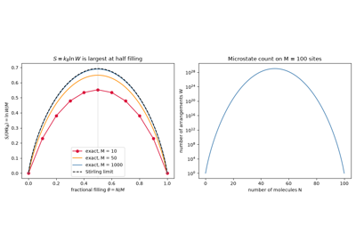
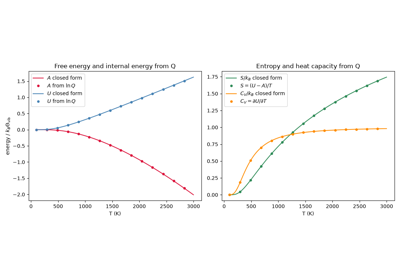
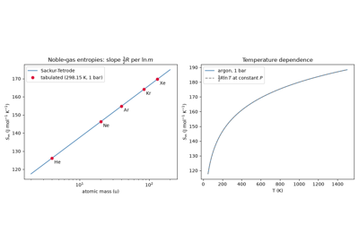
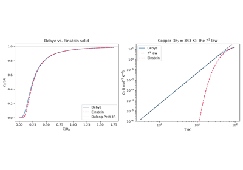
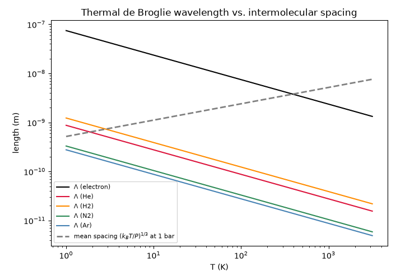
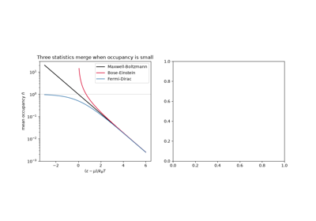
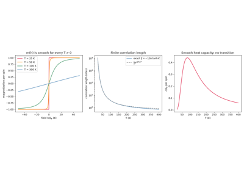
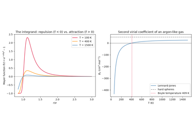
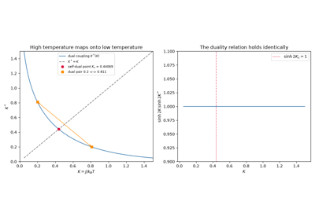
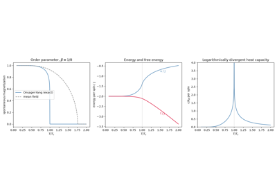

Breakthroughs in Molecular Statistical Mechanics#
“S = k . log W” – inscription on Ludwig Boltzmann’s tombstone, Vienna Zentralfriedhof (a formula Boltzmann himself never actually wrote down in this notation – see 1877 – 1901, below)
Statistical mechanics answers a deceptively simple chemistry question:
given the mechanical laws governing an individual molecule – how it
translates, rotates, and vibrates – what do those laws imply about a
mole of them together, at equilibrium, at a measurable temperature? The
translational, rotational, and vibrational partition functions in
chemistrykit.statmech are the direct answer, each one a
century-old piece of that program: Maxwell’s and Boltzmann’s kinetic
theory of gas speeds, the puzzle of which motions actually store
thermal energy classically and which do not, Gibbs’s ensemble
formalism for turning a partition function into every macroscopic
thermodynamic quantity at once, and Sackur, Tetrode, Einstein, and
Langmuir’s applications of the (at the time barely two-decades-old)
quantum of action to translational entropy, vibrational heat capacity,
and adsorption equilibrium. This chronology traces those breakthroughs,
with a pointer to the corresponding implementation in this package at
each stop.
1860 – 1872 – Maxwell, Boltzmann, and the Molecular Speed Distribution#
James Clerk Maxwell’s “Illustrations of the Dynamical Theory of Gases” derived, from little more than the assumption that a gas’s three Cartesian velocity components are independent and that the distribution of speeds cannot depend on the choice of axes, the specific functional form every molecule’s speed must be distributed as at equilibrium: not uniform, not exponential, but the distribution now bearing his name, peaked at a most-probable speed and falling off as a Gaussian in \(v^2\). It was a strange derivation even by Maxwell’s own later admission – an argument from symmetry and independence rather than from any detailed accounting of molecular collisions – and it left open why a gas should relax to exactly this distribution rather than some other one consistent with the same symmetry.
Ludwig Boltzmann closed that gap twelve years later. His 1872 paper introduced the H-functional – a single number computable from any velocity distribution, however far from equilibrium – and proved his H-theorem: molecular collisions alone, with no further assumption, drive H monotonically downward over time until it reaches its unique minimum, attained precisely at Maxwell’s distribution and no other. What Maxwell had guessed from symmetry, Boltzmann showed was the inevitable long-time outcome of ordinary molecular collisions – the first serious mechanical argument for irreversibility, and the reason the distribution is properly named after both men.
Implementation: chemistrykit.statmech.MaxwellBoltzmannSpeedDistribution
implements exactly this pdf (and its cdf, via the error function), with
most_probable_speed(),
mean_speed(), and
rms_speed() giving the three characteristic
speeds that stand in a fixed, temperature-independent ratio – a purely
geometric property of the distribution Maxwell’s symmetry argument alone
already fixes.
References: J. C. Maxwell, “Illustrations of the Dynamical Theory of Gases,” Philos. Mag. 19, 19-32 (1860); L. Boltzmann, “Weitere Studien über das Wärmegleichgewicht unter Gasmolekülen,” Sitzungsberichte Akad. Wiss. Wien 66, 275-370 (1872); McQuarrie, Statistical Mechanics, Ch. 27.

1871 – 1879 – Boltzmann, Maxwell, and the Equipartition Theorem’s Puzzle#
Ludwig Boltzmann’s 1871 paper “Einige allgemeine Sätze über Wärmegleichgewicht” generalized a special case already implicit in Maxwell’s kinetic theory into a sweeping general claim: at thermal equilibrium, every independent quadratic term in a system’s classical energy – one translational, one rotational, one vibrational degree of freedom, it makes no difference which – carries exactly the same average energy, \(\frac12k_BT\). For a rigid diatomic molecule this predicts \(\frac32k_BT\) of translational energy, \(k_BT\) of rotational energy (two quadratic rotational degrees of freedom), and, once vibration is admitted, a further \(k_BT\) of vibrational energy (one quadratic kinetic term, one quadratic potential term) – a clean, parameter-free prediction with no adjustable constants at all.
James Clerk Maxwell, extending the theorem himself in 1879 to systems with arbitrarily many degrees of freedom, was also the one who stated most sharply why this was a problem rather than a triumph: real diatomic and polyatomic gases’ measured heat capacities fell well short of the equipartition prediction at ordinary temperatures, as though entire vibrational (and sometimes rotational) degrees of freedom were simply absent. Maxwell called it “the greatest difficulty which the molecular theory has yet encountered,” and the puzzle – which classical mechanics had no resource left to resolve – stood unexplained for nearly three decades, until Einstein’s 1907 quantum theory of specific heats (below) supplied the missing ingredient: a mode’s energy spacing, not just its existence, governs whether it can absorb thermal energy at a given temperature at all.
Implementation: chemistrykit.statmech.RotationalPartitionFunctionLinear
implements only the classical high-temperature limit equipartition
predicts (heat_capacity_v()
returns exactly \(Nk_B\) at every temperature, as its own
docstring flags), while
VibrationalPartitionFunctionHarmonic is
an exact quantum treatment that only approaches its own equipartition
value \(Nk_B\) as \(T\to\infty\) – so
IdealGasMolecule, which sums both, is a
direct working demonstration of exactly the gap between the classical
prediction and the quantum reality that puzzled Maxwell.
References: L. Boltzmann, “Einige allgemeine Sätze über Wärmegleichgewicht,” Sitzungsberichte Akad. Wiss. Wien 63, 679-711 (1871); J. C. Maxwell, “On Boltzmann’s Theorem on the Average Distribution of Energy in a System of Material Points,” Trans. Camb. Philos. Soc. 12, 547-570 (1879) (the “greatest difficulty” remark is widely quoted from this paper in secondary literature).

The equipartition theorem, and why only one mode actually “freezes out”
1877 – 1901 – Boltzmann, Planck, and the Statistical Entropy S = k ln W#
Ludwig Boltzmann’s 1877 paper “Über die Beziehung zwischen dem zweiten Hauptsatze der mechanischen Wärmetheorie und der Wahrscheinlichkeitsrechnung” made the case that entropy is not a mysterious separate quantity but a direct measure of a macroscopic state’s probability: the number of microscopic arrangements W (“Wahrscheinlichkeit,” though closer in meaning to multiplicity than probability in the modern sense) consistent with the observed macroscopic description. A gas spontaneously spreads to fill its container not because some new force pushes it there, but because the “spread out” macrostate is compatible with astronomically more microstates than any compressed one – the same purely combinatorial logic behind why shuffled playing cards almost never come back out sorted.
The tombstone inscription “S = k . log W” is, however, a later retrospective attribution rather than a formula Boltzmann himself ever wrote in that compact notation, with a named constant k: his own papers work with proportionalities and unnamed constants of proportionality, not the explicit equation with Boltzmann’s constant picked out as a fundamental quantity in its own right. That step belongs to Max Planck, who – deriving the blackbody radiation law in 1900-1901 – was the first to write the entropy-probability relation explicitly with a named constant, and who named that constant after Boltzmann in recognition of the statistical idea it was built on. The formula immortalized on Boltzmann’s grave is therefore, in the precise historical sense, Planck’s formula for Boltzmann’s idea.
Implementation: chemistrykit.statmech.LatticeGasAdsorption.canonical_entropy()
computes exactly this combinatorial entropy,
\(S=k_B\ln\binom{M}{N}\), for N indistinguishable adsorbed
molecules arranged on M lattice sites – via the numerically exact
chemistrykit.statmech.ln_binomial() rather than Stirling’s
approximation – and shows it maximized at half filling, exactly where
the number of microscopic arrangements W is largest. The named
constant itself, chemistrykit.constants.K_B, is the quantity
every entropy and heat-capacity formula throughout this package is built
from.
References: L. Boltzmann, “Über die Beziehung zwischen dem zweiten Hauptsatze der mechanischen Wärmetheorie und der Wahrscheinlichkeitsrechnung, respektive den Sätzen über das Wärmegleichgewicht,” Sitzungsberichte Akad. Wiss. Wien 76, 373-435 (1877); M. Planck, “Über das Gesetz der Energieverteilung im Normalspektrum,” Ann. Phys. 4, 553-563 (1901).

Boltzmann’s S = k ln W by counting lattice arrangements
1902 – Gibbs’s Elementary Principles in Statistical Mechanics#
Josiah Willard Gibbs’s Elementary Principles in Statistical Mechanics – his last major work, published the year before his death – gave statistical mechanics its modern, systematic form: rather than reason about one physical system’s time-averaged behavior directly, imagine an ensemble of an enormous number of imagined identical copies of the system, distributed over every microstate consistent with the macroscopic constraints, and compute averages over that ensemble instead. For a system held at fixed temperature (the canonical ensemble), Gibbs showed that essentially every thermodynamic quantity of interest – internal energy, entropy, free energy, heat capacity – follows directly from a single generating function, the canonical partition function \(Q=\sum_i e^{-E_i/k_BT}\), via \(A=-k_BT\ln Q\). It is the reason a single object, the partition function, sits at the center of every subsequent quantum-statistical result below.
Implementation: chemistrykit.statmech.PartitionFunction
declares exactly this common interface – value, internal_energy,
entropy, heat_capacity_v – and its
helmholtz_free_energy()
computes \(A=U-TS\), Gibbs’s own free-energy relation, generically
from any subclass’s energy and entropy;
IdealGasMolecule composes independent
translational, rotational, and vibrational partition functions into one
combined molecular partition function exactly as Gibbs’s ensemble theory
licenses (the total partition function of independent modes factorizes,
\(q=q_{\text{trans}}q_{\text{rot}}q_{\text{vib}}\)), and its
thermodynamic_functions()
bundles the resulting U, S, Cv, and A together.
References: J. W. Gibbs, Elementary Principles in Statistical Mechanics, Developed with Especial Reference to the Rational Foundation of Thermodynamics (New Haven: Yale University Press, 1902).

Gibbs’s canonical ensemble: all thermodynamics from one partition function
1907 – Einstein’s Quantum Theory of Specific Heats#
Albert Einstein resolved the equipartition puzzle above by applying Planck’s quantum hypothesis – until then invoked only for the specific case of blackbody radiation – to something entirely different: the vibrations of atoms in a solid. Modeling a solid as a collection of independent quantum oscillators each vibrating at the same frequency \(\nu\), Einstein showed that a mode’s average energy is not the classical, temperature-independent \(k_BT\) but a temperature- dependent quantity that only approaches \(k_BT\) once \(k_BT\) comfortably exceeds the mode’s own quantum \(h\nu\); well below that threshold the mode’s heat capacity vanishes exponentially, “frozen out” of thermal equilibrium entirely. This was the first time the quantum of action was shown to matter for an everyday material property completely unrelated to radiation, and it explained at a stroke why diamond’s heat capacity (very high vibrational frequency, hence a very high freeze-out temperature) behaved so differently from softer, lower-frequency solids at the same temperature – exactly the vibrational side of the equipartition puzzle Maxwell had flagged decades earlier.
Implementation: chemistrykit.statmech.VibrationalPartitionFunctionHarmonic.heat_capacity_v()
implements exactly this formula (reused here for a single molecular
vibrational mode rather than Einstein’s original 3D lattice of solid-state
oscillators), vanishing as \(T\to0\) and approaching the classical
equipartition value \(k_B\) per mode as \(T\to\infty\); its
vibrational_temperature
property gives \(\Theta_{\text{vib}}\) directly, and
from_wavenumber()
builds a mode straight from an experimental IR wavenumber.
References: A. Einstein, “Die Plancksche Theorie der Strahlung und die Theorie der spezifischen Wärme,” Ann. Phys. 22, 180-190 (1907).

Einstein’s quantum theory of the vibrational heat capacity
1911 – 1912 – Sackur and Tetrode’s Translational Entropy#
Otto Sackur and, independently, Hugo Tetrode set out to compute something that sounds elementary – the absolute translational entropy of an ideal monatomic gas – and found they could only get a formula that agreed with experiment (vapor-pressure and chemical-equilibrium data for mercury and other monatomic gases) by inserting Planck’s constant into a classical statistical-mechanical calculation, years before anyone had a coherent theory of why a classical phase-space calculation should involve a quantum of action at all. Sackur (1911) and Tetrode (1912), working independently and using slightly different routes to essentially the same result, effectively used h to set the size of one quantum-mechanical cell in classical phase space – an ad hoc but strikingly successful anticipation, a full fifteen years before Schrodinger’s wave mechanics, of the idea that phase space is not infinitely subdividable.
Implementation: chemistrykit.statmech.TranslationalPartitionFunction.entropy()
implements exactly this formula, and the standalone
chemistrykit.statmech.sackur_tetrode_entropy() convenience wrapper
takes pressure and temperature directly, reproducing argon’s tabulated
standard molar entropy (Atkins & de Paula, Table 13.1) to three
significant figures from nothing but its molecular mass.
References: O. Sackur, “Die Anwendung der kinetischen Theorie der Gase auf chemische Probleme,” Ann. Phys. 36, 958-980 (1911); H. Tetrode, “Die chemische Konstante der Gase und das elementare Wirkungsquantum,” Ann. Phys. 38, 434-442 (1912).

The Sackur-Tetrode entropy of a monatomic gas
1912 – Debye’s T-Cubed Law for the Heat Capacity of Solids#
Einstein’s 1907 theory (above) explained why a solid’s heat capacity falls below the Dulong-Petit value \(3R\) on cooling, but it predicted an exponential fall, far faster than the measurements Walther Nernst’s laboratory was then making on solids near liquid-hydrogen temperatures. Peter Debye saw the reason: the atoms of a crystal do not vibrate independently at one frequency, but collectively, as sound waves with a whole spectrum of frequencies. Treating the solid as an elastic continuum gives a density of vibrational states growing as \(\nu^2\), which Debye cut off at a maximum frequency \(\nu_D\) so that the crystal has exactly \(3N\) modes in total. However low the temperature, the longest-wavelength sound waves still have energy spacings smaller than \(k_BT\) and stay thermally active, so the heat capacity falls only as a power law, \(C_V\propto T^3\). The single parameter \(\Theta_D=h\nu_D/k_B\), the Debye temperature, fits the heat capacities of many simple solids over the whole temperature range, and the \(T^3\) law remains the standard way to extrapolate calorimetric data to absolute zero when determining third-law entropies.
Implementation: chemistrykit.statmech.DebyeSolid evaluates
this integral numerically in
heat_capacity_v() (with the
matching thermal energy in
internal_energy()), and
low_temperature_heat_capacity()
gives the limiting \(T^3\) law it approaches as \(T\to0\).
References: P. Debye, “Zur Theorie der spezifischen Wärmen,” Ann. Phys. 39, 789-839 (1912); McQuarrie, Statistical Mechanics, Ch. 11.

Debye’s T-cubed law for the heat capacity of a solid
1918 – Langmuir’s Statistical Theory of Adsorption#
Irving Langmuir, studying gas adsorption onto tungsten filaments and other clean metal surfaces at General Electric, proposed a simple microscopic picture that – unlike the empirical Freundlich isotherm already in use – could be derived from first principles: a fixed number of independent, non-interacting adsorption sites, each either empty or occupied by exactly one adsorbed molecule, in dynamic equilibrium with the surrounding gas. Treating the sites as an open system in equilibrium with an ideal-gas reservoir gives a coverage that rises linearly with pressure at low pressure and saturates smoothly toward complete monolayer coverage at high pressure – the Langmuir isotherm – with a single physically meaningful parameter, the adsorption energy, controlling where the transition happens.
Implementation: chemistrykit.statmech.LatticeGasAdsorption
implements exactly this grand-canonical lattice-gas derivation –
coverage() gives
\(\theta(P)\), and
p_half() gives the
half-coverage pressure \(P_0\) directly from the adsorption energy,
molecular mass, and temperature via the gas-phase chemical potential.
References: I. Langmuir, “The Adsorption of Gases on Plane Surfaces of Glass, Mica and Platinum,” J. Am. Chem. Soc. 40, 1361-1403 (1918).

Langmuir’s adsorption isotherm from a lattice-gas model
1920 – Stern’s Molecular-Beam Verification of the Speed Distribution#
Every result above through 1918 was a theoretical derivation of the Maxwell-Boltzmann distribution’s consequences (entropy, adsorption, heat capacity); none of it directly measured a molecule’s speed. Otto Stern’s 1920 rotating-drum molecular-beam apparatus – a silver-coated platinum wire vaporized at the center of an evacuated, spinning cylinder – gave the first direct experimental access to actual molecular speeds, inferred from where the deposited silver landed on the rotating drum’s inner wall relative to where it would land from an infinitely fast beam. The measured mean speed matched the kinetic-theory prediction to within Stern’s admittedly generous experimental uncertainty; more demanding confirmations of the full distribution’s shape, not just its mean, came over a decade later from Leonard Zartman’s and, with improved velocity selectors, I. Estermann and Otto Stern’s own further refinements of the technique through the 1930s.
Implementation: chemistrykit.statmech.MaxwellBoltzmannSpeedDistribution.sample()
draws a synthetic “molecular beam” of speeds by sampling three
independent Gaussian velocity components and taking their norm – exactly
the underlying statistical model a real molecular-beam measurement
infers back from – letting a finite-sample histogram be compared
directly against the exact analytic pdf, the same kind of
theory-versus-measurement check Stern’s apparatus first made possible.
References: O. Stern, “Eine direkte Messung der thermischen Molekulargeschwindigkeit,” Z. Phys. 2, 49-56 (1920); L. Zartman, “A Direct Measurement of Molecular Velocities,” Phys. Rev. 37, 383-389 (1931).

Verifying the speed distribution: Stern’s molecular-beam experiment
1924 – 1925 – de Broglie’s Matter Waves and the Thermal Wavelength#
Louis de Broglie’s doctoral thesis proposed, by analogy with the already-established wave-particle duality of light, that every material particle of momentum p has an associated wavelength \(\lambda=h/p\) – a conjecture with no experimental support at the time it was made, confirmed only three years later by Davisson and Germer’s electron-diffraction experiment. Applied not to a single particle’s momentum but to the whole thermal spread of momenta a gas molecule carries at temperature T, de Broglie’s relation gives a natural length scale, the thermal de Broglie wavelength – roughly, how “smeared out” a typical molecule’s position is by its own quantum wave-like nature. Whenever that wavelength is small compared to the average distance between molecules, as it is for essentially every ordinary gas well above its condensation point, treating translational motion as classical (position and momentum both sharply defined) is an excellent approximation; only when the thermal wavelength grows comparable to the interparticle spacing – liquid helium, a dilute ultracold atomic gas, the conduction electrons in a metal – does quantum statistics (below) become unavoidable.
Implementation: chemistrykit.statmech.thermal_de_broglie_wavelength()
implements exactly this formula, confirmed in its own docstring to be a
small fraction of an angstrom for room-temperature argon – far shorter
than the mean interparticle spacing in a gas at atmospheric pressure, the
formal justification for treating translational motion classically
throughout this package’s
TranslationalPartitionFunction. It is
also, less obviously, the length scale entering the gas-phase chemical
potential LatticeGasAdsorption uses to
convert a gas pressure into the Langmuir isotherm’s half-coverage
pressure \(P_0\) (see 1918, above).
References: L. de Broglie, “Recherches sur la théorie des quanta,” PhD thesis, University of Paris (1924), published as Ann. Phys. 10, 22-128 (1925).

De Broglie’s matter waves: the thermal wavelength of a gas
1924 – 1926 – Bose, Einstein, Fermi, Dirac, and the Classical Limit of Quantum Statistics#
Satyendra Nath Bose’s 1924 derivation of Planck’s radiation law by treating light quanta as genuinely indistinguishable particles obeying a new counting rule – refined by Einstein into a full quantum statistical mechanics of an ideal gas of indistinguishable bosons – and Enrico Fermi’s and Paul Dirac’s independent 1926 derivations of the complementary statistics obeyed by indistinguishable fermions (subject to the Pauli exclusion principle, itself only a year old), together completed the picture the classical, Maxwell-Boltzmann statistics used everywhere above are a limit of, not a universally exact description. Both quantum statistics reduce smoothly to the classical Maxwell-Boltzmann distribution whenever the thermal de Broglie wavelength (1924-25, above) is small compared to the interparticle spacing – precisely the “dilute, high-temperature” regime every partition function elsewhere in this package assumes without further comment, and the reason distinguishing bosons from fermions never actually arises in a package built entirely on classical molecular statistics.
Connection: this package implements no Bose-Einstein or Fermi-Dirac
distribution – every partition function in
chemistrykit.statmech.systems.partition_functions is built on the
classical Maxwell-Boltzmann counting these results show is only ever a
limiting case – but
chemistrykit.statmech.thermal_de_broglie_wavelength()’s own
confirmation that \(\Lambda\) is minuscule for ordinary molecular
gases (see 1924-25, above) is exactly the quantitative condition under
which that omission is a genuine physical approximation rather than an
oversight, and the Maxwell-Boltzmann speed distribution plotted throughout
this package is precisely what both quantum statistics degenerate into in
that limit.
References: S. N. Bose, “Plancks Gesetz und Lichtquantenhypothese,” Z. Phys. 26, 178-181 (1924); A. Einstein, “Quantentheorie des einatomigen idealen Gases,” Sitzungsber. Preuss. Akad. Wiss. (1924), 261-267, and (1925), 3-14; E. Fermi, “Sulla quantizzazione del gas perfetto monoatomico,” Rend. Lincei 3, 145-149 (1926); P. A. M. Dirac, “On the Theory of Quantum Mechanics,” Proc. R. Soc. Lond. A 112, 661-677 (1926).

Bose-Einstein and Fermi-Dirac statistics reduce to Maxwell-Boltzmann
1925 – Ising’s One-Dimensional Model of a Ferromagnet#
Wilhelm Lenz proposed, and his student Ernst Ising solved for his 1924 Hamburg dissertation, the simplest possible model of cooperative behavior: a row of “spins” \(s_i=\pm1\), each interacting only with its nearest neighbors through an energy \(-Js_is_{i+1}\), in a field h. The same model, read as occupied and empty sites, is a lattice gas with nearest-neighbor attraction, the natural interacting extension of Langmuir’s independent sites (1918, above). Ising found that the one-dimensional chain never orders at any temperature above absolute zero: a single broken bond costs a finite energy but gains an entropy that grows with the chain’s length, so thermal fluctuations always win. He concluded, wrongly as it turned out, that the model could not describe a phase transition in any dimension. The exact solution is most easily written with the transfer matrix introduced later by Kramers and Wannier (1941, below): the partition function of a ring of N spins is \(Z_N=\lambda_+^N+\lambda_-^N\), where \(\lambda_\pm\) are the eigenvalues of a 2x2 matrix.
Implementation: chemistrykit.statmech.Ising1D implements the
transfer-matrix solution:
partition_function(),
free_energy_per_spin(),
magnetization() (zero in zero field
at every \(T>0\)), the finite
correlation_length(), and the smooth
heat_capacity_per_spin().
References: E. Ising, “Beitrag zur Theorie des Ferromagnetismus,” Z. Phys. 31, 253-258 (1925); S. G. Brush, “History of the Lenz-Ising Model,” Rev. Mod. Phys. 39, 883-893 (1967).

Ising’s one-dimensional chain: no phase transition
1937 – Mayer’s Cluster Expansion and the Second Virial Coefficient#
Every result above treats molecules as non-interacting apart from the occasional collision. Joseph E. Mayer, building on H. D. Ursell’s 1927 expansion of the configurational integral, showed how to put intermolecular forces into the partition function systematically. The Boltzmann factor of each pair is written as \(1+f(r)\), where the Mayer function \(f(r)=e^{-u(r)/k_BT}-1\) is non-zero only when two molecules are close together. Expanding the product over all pairs and grouping the terms into connected “clusters” gives the virial equation of state \(PV_m/RT=1+B_2(T)/V_m+B_3(T)/V_m^2+\cdots\), in which every coefficient is an explicit integral over the pair potential. This turned measured gas non-ideality into a direct probe of intermolecular forces. Fitting \(B_2(T)\) data was for decades the main way the parameters of potentials such as the Lennard-Jones potential were determined.
Implementation: chemistrykit.statmech.second_virial_coefficient()
evaluates this integral by quadrature for any spherical pair potential,
including hard-core potentials, and reproduces the hard-sphere value
\(\frac{2\pi}{3}N_A\sigma^3\), the closed-form square-well result, and
the Lennard-Jones Boyle temperature \(T_B\approx3.418\,\epsilon/k_B\)
(tested in chemistrykit/statmech/tests/test_virial.py).
References: H. D. Ursell, “The Evaluation of Gibbs’ Phase-Integral for Imperfect Gases,” Proc. Cambridge Philos. Soc. 23, 685-697 (1927); J. E. Mayer, “The Statistical Mechanics of Condensing Systems. I,” J. Chem. Phys. 5, 67-73 (1937); J. E. Mayer and M. G. Mayer, Statistical Mechanics (New York: Wiley, 1940); McQuarrie, Statistical Mechanics, Ch. 12.

Mayer’s cluster expansion: the second virial coefficient
1941 – Kramers and Wannier’s Duality and the Exact Critical Temperature#
Hendrik Kramers and Gregory Wannier reopened the question Ising had closed (1925, above) by studying the two-dimensional square lattice. They introduced the transfer-matrix method and found a hidden symmetry: the high-temperature expansion of the partition function (a sum over closed loops of bonds) and its low-temperature expansion (a sum over domain walls around flipped spins) have exactly the same form, with the coupling \(K=J/k_BT\) in one replaced by a dual coupling \(K^*\) in the other. The duality maps high temperature onto low temperature. If the model has a single phase transition, it must therefore sit at the self-dual point \(K_c=K_c^*\), which fixes the critical temperature exactly, three years before anyone could solve the model. It was the first exact critical temperature for any lattice model, and the first firm evidence that the Ising model does order in two dimensions.
Implementation: chemistrykit.statmech.kramers_wannier_dual_coupling()
computes \(K^*=-\tfrac12\ln\tanh K\) (an involution whose fixed point is
\(K_c\)), and chemistrykit.statmech.ising_2d_critical_temperature()
returns the exact \(T_c\) for a given coupling J.
References: H. A. Kramers and G. H. Wannier, “Statistics of the Two-Dimensional Ferromagnet. Part I,” Phys. Rev. 60, 252-262 (1941).

Kramers-Wannier duality and the exact Ising critical temperature
1944 – 1952 – Onsager’s Exact Solution of the Two-Dimensional Ising Model#
Lars Onsager calculated the partition function of the zero-field square lattice Ising model exactly, by diagonalizing Kramers and Wannier’s transfer matrix with an algebraic method of his own. It was the first exact solution of any model with a genuine phase transition, and it settled the long debate over whether the partition function, a sum of smooth exponentials, could produce a singularity at all: in the limit of an infinite lattice, it does. The solution also showed that the approximate mean-field (Bragg-Williams) theory, the standard treatment of the time, is qualitatively wrong near \(T_c\): the heat capacity does not jump but diverges logarithmically. Onsager announced the spontaneous magnetization, \(m=[1-\sinh^{-4}2K]^{1/8}\), at a 1949 conference without publishing a derivation. C. N. Yang supplied the proof in 1952, and its exponent \(\beta=1/8\) (against the mean-field value 1/2) became a benchmark for the theory of critical phenomena.
Implementation: chemistrykit.statmech.Ising2DOnsager evaluates
Onsager’s free energy
(free_energy_per_spin()), and
the internal energy and heat capacity in closed form via complete
elliptic integrals
(internal_energy_per_spin(),
heat_capacity_per_spin()), as
well as Yang’s
spontaneous_magnetization().
The tests check each quantity against numerical derivatives of the free
energy.
References: L. Onsager, “Crystal Statistics. I. A Two-Dimensional Model with an Order-Disorder Transition,” Phys. Rev. 65, 117-149 (1944); C. N. Yang, “The Spontaneous Magnetization of a Two-Dimensional Ising Model,” Phys. Rev. 85, 808-816 (1952); K. Huang, Statistical Mechanics, 2nd ed. (New York: Wiley, 1987), Ch. 15.

Onsager’s exact solution of the two-dimensional Ising model